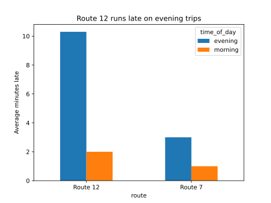

Skills you'll practice in this reading:
Stakeholder Communication — Writing up findings for a real audience who wasn't in the room for the analysis, with a clear structure and an actual supporting visual.
Already started this reading? If you saved a JSON file from a previous visit, upload it here to pick up right where you left off.
Your goal: turn a notebook finding into a README and a memo that someone can act on without seeing your code. A stakeholder is the person who will use your finding to make a decision. Here, that is the transit manager. You already know how to group data, draw a bar chart and write a checkable question.
Key terms for this reading
These are the words this reading uses. Flip a card to see what a word means. Each one comes up again below with an example.
1. Quick recall
One skill you already have comes up in this reading: writing a checkable question.
Recall: which question could the people who run the bus data answer with a fact?
2. Recompute the number before you cite it
A document should only quote a number you just checked, not one you remember. So before writing, Jordan runs the summary again. Here is a small slice of the trip file.
Predict: which group has the highest average in the output of cell 1?
import pandas as pd
trips = pd.read_csv("trips.csv")
means = trips.groupby(["route", "time_of_day"])["minutes_late"].mean().round(1)
means
route time_of_day
Route 12 evening 10.3
morning 2.0
Route 7 evening 3.0
morning 1.0
Name: minutes_late, dtype: float64Jordan copies 10.3 from this output into the README. If Jordan had quoted an old number from memory and the file had changed since, the manager would plan around the wrong delay.
3. Save the chart as a file
The manager won't run your notebook, so the chart has to live as an image file next to the README.
New in this cell: os.makedirs("images", exist_ok=True) makes a folder called images. exist_ok=True tells Python not to stop with an error when the folder already exists. means.unstack() turns the inner labels (morning, evening) into columns, so each route gets two bars side by side.
Fill in the blank so the chart is saved to images/late_by_route.png.
import os
import matplotlib.pyplot as plt
os.makedirs("images", exist_ok=True)
means.unstack().plot.bar(rot=0)
plt.title("Route 12 runs late on evening trips")
plt.ylabel("Average minutes late")
plt.____("images/late_by_route.png", dpi=150)
plt.show()

- Find the blank in the line
plt.____("images/late_by_route.png", dpi=150). - Type the name of the matplotlib function that saves a chart to a file. Type only the name: no
plt., no parentheses. - Press Check. When it's right, the Run button shows the chart.
Why: the save line has to come before plt.show(). Once the chart is shown, it is cleared, so saving after that gives a blank image.
4. The README: what did you find?
A README is the project's landing page. Each project lists the sections its README needs, and the list changes from project to project. Whatever the sections are, each one has to stand on its own. A section that just says "see the notebook" leaves the manager with nothing to use.
Here is Jordan's README, with the sections this project asks for. It is a Markdown file, so it is text you read, not a cell you run.
Every README is built from the same few Markdown pieces: ## for a section heading, - for a short bullet, **...** to make a key number bold, [text](link) for a link to the data, and  for an embedded chart. Learn these five and you can write any section a project asks for.
The line that starts with ![ embeds the chart. The text inside the square brackets is the alt text. The path inside the round brackets starts from the README's own folder, so the images folder must sit next to README.md. Without the !, GitHub shows a plain link instead of the picture. Commit the images folder along with the README so the picture shows up on GitHub.
Which alt text helps a reader who can't see the chart?
5. The memo: can I trust it?
The README says what you found. The data-quality memo says how far to trust it. A memo is not a shorter README. It has four parts, every time:
- Domain and stakeholder on one line.
- Answer: one plain sentence. No code words or column names.
- Questions worth checking: two checkable questions about the data.
- Does this affect trust? If one of those questions got a bad answer, would your advice to the stakeholder change?
Write the Answer line
- Start with the bottom line: which route is late, and when.
- Include one number from cell 1, in plain words (for example, "about 10 minutes").
- Leave out code words: no
groupby, nomean, no column names likeminutes_late. - Press Check my sentence to see which parts your sentence has.
Why: the manager reads the first sentence and may stop there.
6. Check your understanding
Sort each item into the page it belongs on. Then press the self-check button.

Where the data came from and its real columns
Findings in plain words, under Takeaways
Two checkable questions about the data
Whether a bad answer would change the advice
A "Domain | Stakeholder" line at the top
README: what did you find?
Memo: can I trust it?
7. Wrap-up
- Recompute a number right before you cite it, and copy what the cell prints.
- Save the chart with
plt.savefigbeforeplt.show(), then embed it in the README with. - The README says what you found, in the sections the project asks for, written in clear Markdown with the chart embedded. The memo says how far to trust it in four parts.
New situation: a teammate looks over Jordan's README. Under Takeaways, it says only "See the notebook for results." What should Jordan change?
In interviews, "How would you explain a finding to someone who isn't technical?" is a common question. A strong answer leads with the bottom line, then gives one number, then names one thing still worth checking. This is called BLUF: Bottom Line Up Front.
You can reuse this pattern for any analysis someone else has to act on: one page for what you found, one page for how far to trust it.
8. Reflection
- Pick one of the two questions in Jordan's memo.
- Write the memo's last line. Start with: "If ___ is true, it would change ___ because ___."
Why: this is the line people most often skip, and it tells the manager what the questions mean for the decision.
Want a second reader?
Go further (optional): telling stories with data
This video is optional and is not counted in the time estimate. As you watch, notice what the speaker puts first, and compare it with the order of Jordan's README.
Watch on YouTubeAdditional resources
Not counted in the time estimate above.
- GitHub Docs: Basic writing and formatting syntax: headings, lists and images in Markdown, as GitHub shows them.
- matplotlib docs: savefig: every option for saving a chart to a file.
- W3C: Complex images: how to write alt text for charts and graphs.
Your score & keep a copy of your work
Keep it in your own GitHub repo (optional, for your streak/portfolio): the Download JSON button above saves the file into your computer's Downloads folder. Here's how to move it into a repo of your own.
Step 1: Make a repo on your GitHub account (one time only — collapse this afterward)
- On GitHub, click the + in the top-right corner, then New repository.
- Give it a name (something like
data-analytics-readings) and click Create repository. - On the new repo's page, click the green Code button and copy the HTTPS URL.
- In your terminal, clone it to your computer, pasting in the URL you just copied:
git clone https://github.com/YOUR-USERNAME/YOUR-REPO.git
You only do this once. For every reading after this one, start at Step 2.
Step 2: Save this reading's file into that repo (do this for every reading):
- Move into your repo folder:
cd YOUR-REPO
- Move the file you just downloaded out of
Downloadsand into that folder:mv ~/Downloads/nobody-was-in-the-room-reading.json .
- Save it to git and push it up to GitHub:
git add nobody-was-in-the-room-reading.json git commit -m "Complete nobody was in the room reading" git push
Submit for credit: this opens a pre-filled GitHub Issue in your own private submission repo. Only you and your instructor can ever see it. You get 4 submission attempts per reading; your best score counts.
First time submitting? Set up your private submission repo (one-time)
- Go to the DA-Reading_Submissions template and click "Use this template" to create your own copy.
- On the create page, set the visibility to Private. It defaults to Public, so you have to change it yourself.
- In your new repo: open Settings, then Collaborators, then Add people, and add your instructor's GitHub username so they can see your scores. Your instructor will share their username with you.
- Copy your repo's name exactly as it appears in GitHub's URL, including any hyphens, underscores, and capitalization. Paste it into the "Your submissions repo name" box below, along with your GitHub username, then click Submit for credit.
Clicking "Submit for credit" opens a new tab with your answers pre-filled into a GitHub Issue. You still need to click "Submit new issue" on that page yourself to actually finish submitting.
Getting a "404" page instead? Two usual causes: the repo name you typed doesn't exactly match the real one (check for a stray hyphen or different capitalization), or you're not signed in to GitHub as the account that owns the repo — a private repo looks like a 404 to anyone who isn't signed in to it.